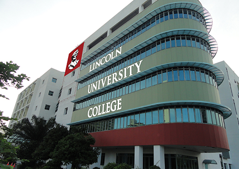
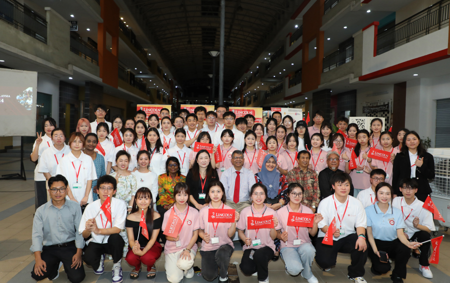
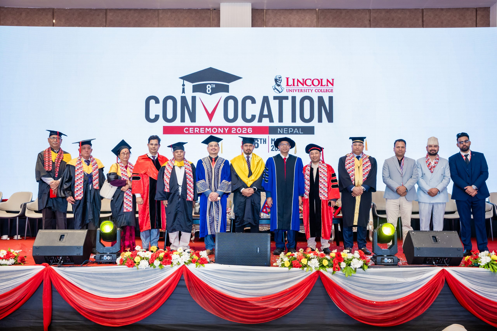
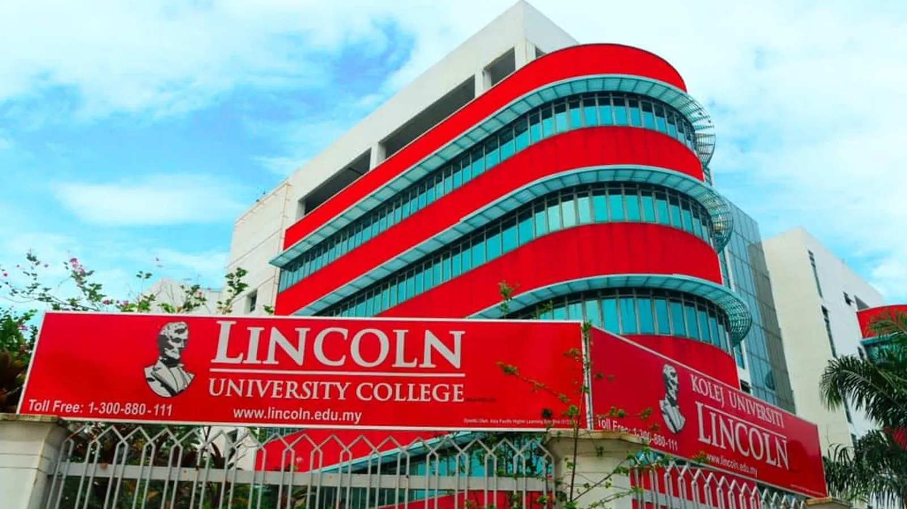
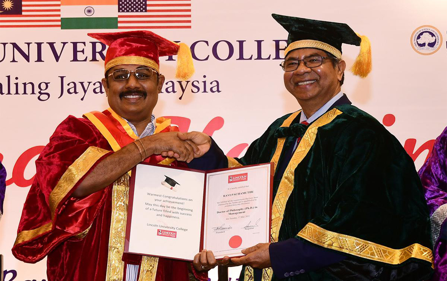

University overview
About Lincoln University College
Founded in 2002 as Lincoln College and upgraded to university college status in 2011, Lincoln University College (LUC) is a premier private higher education institution situated in Petaling Jaya, Selangor. LUC is dedicated to providing high-quality tertiary education with a strong emphasis on clinical training, professional practice, research, and career-focused innovation.
LUC is fully accredited by the Malaysian Qualifications Agency (MQA) and approved by the Ministry of Higher Education (MOHE). The university has achieved a 5-Star SETARA rating and holds ISO 9001:2015 certification. Lincoln University College is ranked #701–710 in QS World University Rankings 2027. Lincoln University College is ranked #196 in QS Asia University Rankings 2026. LUC maintains active academic affiliations with the Association of Commonwealth Universities (ACU) and International Association of Universities (IAU).






International students
Study at Lincoln University College as an international student
Compare Lincoln University College courses, campuses, fees and entry requirements for your intended intake.
Programmes and tuition
Lincoln University College LUC courses and fees for international students
| No | Program Name | Level | Mode | Duration (Years) | Year | Total Tuition fee (MYR) | Tuition Fee (MYR/ YEAR) | EMGS Visa Fee/ Renewal fee (MYR) | Registration Fee (MYR) | Security Bond (MYR) | Total Fee (MYR) | Program Total (MYR) |
|---|---|---|---|---|---|---|---|---|---|---|---|---|
| 1 | PhD in Medical Anatomy | PhD | Research | 3 | Year 1 Year 2 Year 3 | 47,000 | 15,667 15,667 15,667 | 3,500 1,600 1,600 | 6,000 | 1,500 | 26,667 17,267 17,267 | 61,200 |
| 2 | Doctor of Philosophy (PhD) in Medical Physiology | PhD | Research | 3 | Year 1 Year 2 Year 3 | 47,000 | 15,667 15,667 15,667 | 3,500 1,600 1,600 | 6,000 | 1,500 | 26,667 17,267 17,267 | 61,200 |
| 3 | Doctor of Philosophy in Medical Sciences | PhD | Research | 3 | Year 1 Year 2 Year 3 | 47,000 | 15,667 15,667 15,667 | 3,500 1,600 1,600 | 6,000 | 1,500 | 26,667 17,267 17,267 | 61,200 |
| 4 | Master in Medical Ultrasound | Master | Coursework | 2 | Year 1 Year 2 | 29,000 | 14,500 14,500 | 3,500 1,600 | 6,000 | 1,500 | 25,500 16,100 | 41,600 |
| - | Master of Medical Sciences | Master | Research | 2 | Year 1 Year 2 | 29,000 | 14,500 14,500 | 3,500 1,600 | 6,000 | 1,500 | 25,500 16,100 | 41,600 |
| - | Master of Science in Public Health | Master | Coursework | 1.5 | Year 1 Year 2 | 29,000 | 19,333 9,667 | 3,500 1,600 | 6,000 | 1,500 | 30,333 11,267 | 41,600 |
| - | Master of Science in Public Health (by Research) | Master | Research | 2 | Year 1 Year 2 | 29,000 | 14,500 14,500 | 3,500 1,600 | 6,000 | 1,500 | 25,500 16,100 | 41,600 |
| - | Post Graduate Diploma in Wound Care Management | Master | Coursework | 1 | Year 1 | 29,000 | 29,000 | 3,500 | 6,000 | 1,500 | 40,000 | 40,000 |
| 5 | Doctor of Medicine (MD) | Bachelor | Coursework | 5 | Year 1 Year 2 Year 3 Year 4 Year 5 | 412,000 | 82,400 82,400 82,400 82,400 82,400 | 3,500 1,600 1,600 1,600 1,600 | 6,000 | 1,500 | 93,400 84,000 84,000 84,000 84,000 | 429,400 |
| 6 | Bachelor of Cardiopulmonary and Perfusion Technology (Honours) | Bachelor | Coursework | 4 | Year 1 Year 2 Year 3 Year 4 | 71,000 | 17,750 17,750 17,750 17,750 | 3,500 1,600 1,600 1,600 | 6,000 | 1,500 | 28,750 19,350 19,350 19,350 | 86,800 |
| 7 | Bachelor of Medical Imaging (Hons) | Bachelor | Coursework | 4 | Year 1 Year 2 Year 3 Year 4 | 71,000 | 17,750 17,750 17,750 17,750 | 3,500 1,600 1,600 1,600 | 6,000 | 1,500 | 28,750 19,350 19,350 19,350 | 86,800 |
Schedule remarks:
All charges are Inclusive of the 6% SST Service Fee.
Miscellaneous Fees (If Applicable):
- Lab Fee (Per Year): 1100 MYR
- Intensive English Program (Per Level): 1750 MYR
- Pre requisite Course: 2000 MYR
| No | Program Name | Level | Mode | Duration (Years) | Year | Total Tuition fee (MYR) | Tuition Fee (MYR/ YEAR) | EMGS Visa Fee/ Renewal fee (MYR) | Registration Fee (MYR) | Security Bond (MYR) | Total Fee (MYR) | Program Total (MYR) |
|---|---|---|---|---|---|---|---|---|---|---|---|---|
| 12 | Doctor of Philosophy in Dentistry | PhD | Research | 3 | Year 1 Year 2 Year 3 | 47,000 | 15,667 15,667 15,667 | 3,500 1,600 1,600 | 6,000 | 1,500 | 26,667 17,267 17,267 | 61,200 |
| 13 | Master of Science in Dentistry | Master | Research | 2 | Year 1 Year 2 | 29,000 | 14,500 14,500 | 3,500 1,600 | 6,000 | 1,500 | 25,500 16,100 | 41,600 |
| 14 | Doctor of Dental Surgery (DDS) | Bachelor | Coursework | 5 | Year 1 Year 2 Year 3 Year 4 Year 5 | 412,000 | 82,400 82,400 82,400 82,400 82,400 | 3,500 1,600 1,600 1,600 1,600 | 6,000 | 1,500 | 93,400 84,000 84,000 84,000 84,000 | 429,400 |
Schedule remarks:
All charges are Inclusive of the 6% SST Service Fee.
Miscellaneous Fees (If Applicable):
- Lab Fee (Per Year): 1100 MYR
- Intensive English Program (Per Level): 1750 MYR
- Pre requisite Course: 2000 MYR
| No | Program Name | Level | Mode | Duration (Years) | Year | Total Tuition fee (MYR) | Tuition Fee (MYR/ YEAR) | EMGS Visa Fee/ Renewal fee (MYR) | Registration Fee (MYR) | Security Bond (MYR) | Total Fee (MYR) | Program Total (MYR) |
|---|---|---|---|---|---|---|---|---|---|---|---|---|
| 15 | Doctor of Philosophy (Ph.D.) in Pharmacy | PhD | Research | 3 | Year 1 Year 2 Year 3 | 47,000 | 15,667 15,667 15,667 | 3,500 1,600 1,600 | 6,000 | 1,500 | 26,667 17,267 17,267 | 61,200 |
| 16 | Master of Pharmacy | Master | Research | 2 | Year 1 Year 2 | 29,000 | 14,500 14,500 | 3,500 1,600 | 6,000 | 1,500 | 25,500 16,100 | 41,600 |
| 17 | Bachelor of Pharmacy with Honours | Bachelor | Coursework | 4 | Year 1 Year 2 Year 3 Year 4 | 71,000 | 17,750 17,750 17,750 17,750 | 3,500 1,600 1,600 1,600 | 6,000 | 1,500 | 28,750 19,350 19,350 19,350 | 86,800 |
| 18 | Bachelor in Cosmetic Science (Honours) | Bachelor | Coursework | 4 | Year 1 Year 2 Year 3 Year 4 | 71,000 | 17,750 17,750 17,750 17,750 | 3,500 1,600 1,600 1,600 | 6,000 | 1,500 | 28,750 19,350 19,350 19,350 | 86,800 |
| 19 | Diploma in Pharmacy | Diploma | Coursework | 3 | Year 1 Year 2 Year 3 | 35,000 | 11,667 11,667 11,667 | 3,500 1,600 1,600 | 6,000 | 1,500 | 22,667 13,267 13,267 | 49,200 |
| 20 | Diploma in Pharmacy | Diploma | ODL | 3 | Year 1 Year 2 Year 3 | 35,000 | 11,667 11,667 11,667 | 1,000 - - | 6,000 | - | 18,667 11,667 11,667 | 42,000 |
Schedule remarks:
All charges are Inclusive of the 6% SST Service Fee.
Miscellaneous Fees (If Applicable):
- Lab Fee (Per Year): 1100 MYR
- Intensive English Program (Per Level): 1750 MYR
- Pre requisite Course: 2000 MYR
| No | Program Name | Level | Mode | Duration (Years) | Year | Total Tuition fee (MYR) | Tuition Fee (MYR/ YEAR) | EMGS Visa Fee/ Renewal fee (MYR) | Registration Fee (MYR) | Security Bond (MYR) | Total Fee (MYR) | Program Total (MYR) |
|---|---|---|---|---|---|---|---|---|---|---|---|---|
| 21 | Doctor of Philosophy (PhD) in Nursing | PhD | Research | 3 | Year 1 Year 2 Year 3 | 47,000 | 15,667 15,667 15,667 | 3,500 1,600 1,600 | 6,000 | 1,500 | 26,667 17,267 17,267 | 61,200 |
| 22 | Master of Science in Healthcare | Master | Research | 2 | Year 1 Year 2 | 29,000 | 14,500 14,500 | 3,500 1,600 | 6,000 | 1,500 | 25,500 16,100 | 41,600 |
| 23 | Master in Nursing | Master | Research | 2 | Year 1 Year 2 | 29,000 | 14,500 14,500 | 3,500 1,600 | 6,000 | 1,500 | 25,500 16,100 | 41,600 |
| 24 | Master in Nursing (Education) | Master | Coursework | 1.5 | Year 1 Year 2 | 29,000 | 19,333 9,667 | 3,500 1,600 | 6,000 | 1,500 | 30,333 11,267 | 41,600 |
| 25 | Master of Nursing (Midwifery) | Master | Coursework | 1.5 | Year 1 Year 2 | 29,000 | 19,333 9,667 | 3,500 1,600 | 6,000 | 1,500 | 30,333 11,267 | 41,600 |
| 26 | Master of Nursing (Public Health) | Master | Coursework | 1.5 | Year 1 Year 2 | 29,000 | 19,333 9,667 | 3,500 1,600 | 6,000 | 1,500 | 30,333 11,267 | 41,600 |
| 27 | Master of Nursing (Public Health) | Master | ODL | 2 | Year 1 Year 2 | 29,000 | 14,500 14,500 | 1,000 - | 6,000 | - | 21,500 14,500 | 36,000 |
| 28 | Post Basic Renal Care Nursing | Master | Coursework | 0.5 | Year 1 | 12,000 | 12,000 | 3,500 | 6,000 | 1,500 | 23,000 | 23,000 |
| 29 | Post Basic Certificate in Teaching Methodology For Nurses | Master | Coursework | 0.5 | Year 1 | 12,000 | 12,000 | 3,500 | 6,000 | 1,500 | 23,000 | 23,000 |
| 30 | Bachelor of Nursing (Public Health) (Honours) | Bachelor | Coursework | 4 | Year 1 Year 2 Year 3 Year 4 | 71,000 | 17,750 17,750 17,750 17,750 | 3,500 1,600 1,600 1,600 | 6,000 | 1,500 | 28,750 19,350 19,350 19,350 | 86,800 |
| 31 | Bachelor of Nursing Sciences (Honours) (ODL) | Bachelor | ODL | 3 | Year 1 Year 2 Year 3 | 71,000 | 23,667 23,667 23,667 | 1,000 - - | 6,000 | - | 30,667 23,667 23,667 | 78,000 |
| 32 | Bachelor of Nursing Sciences (Hons) | Bachelor | Coursework | 4 | Year 1 Year 2 Year 3 Year 4 | 71,000 | 17,750 17,750 17,750 17,750 | 3,500 1,600 1,600 1,600 | 6,000 | 1,500 | 28,750 19,350 19,350 19,350 | 86,800 |
| 33 | Diploma in Nursing | Diploma | Coursework | 3 | Year 1 Year 2 Year 3 | 35,000 | 11,667 11,667 11,667 | 3,500 1,600 1,600 | 6,000 | 1,500 | 22,667 13,267 13,267 | 49,200 |
Schedule remarks:
All charges are Inclusive of the 6% SST Service Fee.
Miscellaneous Fees (If Applicable):
- Lab Fee (Per Year): 1100 MYR
- Intensive English Program (Per Level): 1750 MYR
- Pre requisite Course: 2000 MYR
| No | Program Name | Level | Mode | Duration (Years) | Year | Total Tuition fee (MYR) | Tuition Fee (MYR/ YEAR) | EMGS Visa Fee/ Renewal fee (MYR) | Registration Fee (MYR) | Security Bond (MYR) | Total Fee (MYR) | Program Total (MYR) |
|---|---|---|---|---|---|---|---|---|---|---|---|---|
| 34 | PhD in Health Sciences | PhD | Research | 3 | Year 1 Year 2 Year 3 | 47,000 | 15,667 15,667 15,667 | 3,500 1,600 1,600 | 6,000 | 1,500 | 26,667 17,267 17,267 | 61,200 |
| 35 | Doctor of Philosophy (Ph.D.) in Traditional Chinese Medicine | PhD | Research | 3 | Year 1 Year 2 Year 3 | 47,000 | 15,667 15,667 15,667 | 3,500 1,600 1,600 | 6,000 | 1,500 | 26,667 17,267 17,267 | 61,200 |
| 36 | Doctor of Philosophy in Agriculture | PhD | Research | 3 | Year 1 Year 2 Year 3 | 47,000 | 15,667 15,667 15,667 | 3,500 1,600 1,600 | 6,000 | 1,500 | 26,667 17,267 17,267 | 61,200 |
| 37 | Doctor of Philosophy in Applied Sciences | PhD | Research | 3 | Year 1 Year 2 Year 3 | 47,000 | 15,667 15,667 15,667 | 3,500 1,600 1,600 | 6,000 | 1,500 | 26,667 17,267 17,267 | 61,200 |
| 38 | Doctor of Philosophy in Nutrition | PhD | Research | 3 | Year 1 Year 2 Year 3 | 47,000 | 15,667 15,667 15,667 | 3,500 1,600 1,600 | 6,000 | 1,500 | 26,667 17,267 17,267 | 61,200 |
| 39 | Doctor of Philosophy in Physiotherapy | PhD | Research | 3 | Year 1 Year 2 Year 3 | 47,000 | 15,667 15,667 15,667 | 3,500 1,600 1,600 | 6,000 | 1,500 | 26,667 17,267 17,267 | 61,200 |
| 40 | Master of Agriculture | Master | Research | 2 | Year 1 Year 2 | 29,000 | 14,500 14,500 | 3,500 1,600 | 6,000 | 1,500 | 25,500 16,100 | 41,600 |
| 41 | Master of Physiotherapy (By Research) | Master | Research | 2 | Year 1 Year 2 | 29,000 | 14,500 14,500 | 3,500 1,600 | 6,000 | 1,500 | 25,500 16,100 | 41,600 |
| 42 | Master of Science in Applied Geology | Master | Coursework | 1.5 | Year 1 Year 2 | 29,000 | 19,333 9,667 | 3,500 1,600 | 6,000 | 1,500 | 30,333 11,267 | 41,600 |
| 43 | Master of Science in Biotechnology | Master | Coursework | 1.5 | Year 1 Year 2 | 29,000 | 19,333 9,667 | 3,500 1,600 | 6,000 | 1,500 | 30,333 11,267 | 41,600 |
| 44 | Master of Science in Biotechnology (by Research) | Master | Research | 2 | Year 1 Year 2 | 29,000 | 14,500 14,500 | 3,500 1,600 | 6,000 | 1,500 | 25,500 16,100 | 41,600 |
| 45 | Master of Science in Biotechnology | Master | ODL | 1.5 | Year 1 Year 2 | 29,000 | 19,333 9,667 | 1,000 - | 6,000 | - | 26,333 9,667 | 36,000 |
| 46 | Master of Science in Microbiology | Master | Coursework | 1.5 | Year 1 Year 2 | 29,000 | 19,333 9,667 | 3,500 1,600 | 6,000 | 1,500 | 30,333 11,267 | 41,600 |
| 47 | Master of Science in Nutrition | Master | Research | 2 | Year 1 Year 2 | 29,000 | 14,500 14,500 | 3,500 1,600 | 6,000 | 1,500 | 25,500 16,100 | 41,600 |
| 48 | Master of Traditional Chinese Medicine | Master | Research | 2 | Year 1 Year 2 | 29,000 | 14,500 14,500 | 3,500 1,600 | 6,000 | 1,500 | 25,500 16,100 | 41,600 |
| 49 | Bachelor of Biomedical Sciences (Honours) | Bachelor | Coursework | 4 | Year 1 Year 2 Year 3 Year 4 | 53,000 | 13,250 13,250 13,250 13,250 | 3,500 1,600 1,600 1,600 | 6,000 | 1,500 | 24,250 14,850 14,850 14,850 | 68,800 |
| 50 | Bachelor of Biotechnology (Honours) | Bachelor | Coursework | 3 | Year 1 Year 2 Year 3 | 53,000 | 17,667 17,667 17,667 | 3,500 1,600 1,600 | 6,000 | 1,500 | 28,667 19,267 19,267 | 67,200 |
| 51 | Bachelor of Homeopathic Medical Science | Bachelor | Coursework | 4 | Year 1 Year 2 Year 3 Year 4 | 53,000 | 13,250 13,250 13,250 13,250 | 3,500 1,600 1,600 1,600 | 6,000 | 1,500 | 24,250 14,850 14,850 14,850 | 68,800 |
| 52 | Bachelor of Physiotherapy (Honours) | Bachelor | Coursework | 4 | Year 1 Year 2 Year 3 Year 4 | 53,000 | 13,250 13,250 13,250 13,250 | 3,500 1,600 1,600 1,600 | 6,000 | 1,500 | 24,250 14,850 14,850 14,850 | 68,800 |
| 53 | Bachelor of Science in Agriculture (Hons) | Bachelor | Coursework | 3 | Year 1 Year 2 Year 3 | 53,000 | 17,667 17,667 17,667 | 3,500 1,600 1,600 | 6,000 | 1,500 | 28,667 19,267 19,267 | 67,200 |
| 54 | Bachelor in Nutrition (Honours) | Bachelor | Coursework | 3.6 | Year 1 Year 2 Year 3 Year 4 | 53,000 | 14,722 14,722 14,722 8,833 | 3,500 1,600 1,600 1,600 | 6,000 | 1,500 | 25,722 16,322 16,322 10,433 | 68,800 |
| 55 | Bachelor of Science in Sports and Fitness | Bachelor | Coursework | 3 | Year 1 Year 2 Year 3 | 53,000 | 17,667 17,667 17,667 | 3,500 1,600 1,600 | 6,000 | 1,500 | 28,667 19,267 19,267 | 67,200 |
| 56 | Bachelor of Ayurvedic Medicine | Bachelor | Coursework | 5 | Year 1 Year 2 Year 3 Year 4 Year 5 | 53,000 | 10,600 10,600 10,600 10,600 10,600 | 3,500 1,600 1,600 1,600 1,600 | 6,000 | 1,500 | 21,600 12,200 12,200 12,200 12,200 | 70,400 |
| 57 | Diploma in Medical and Health Sciences | Diploma | Coursework | 3 | Year 1 Year 2 Year 3 | 35,000 | 11,667 11,667 11,667 | 3,500 1,600 1,600 | 6,000 | 1,500 | 22,667 13,267 13,267 | 49,200 |
| 58 | Diploma in Traditional Chinese Medicine | Diploma | Coursework | 3 | Year 1 Year 2 Year 3 | 35,000 | 11,667 11,667 11,667 | 3,500 1,600 1,600 | 6,000 | 1,500 | 22,667 13,267 13,267 | 49,200 |
| 59 | Diploma in Physiotherapy | Diploma | Coursework | 3 | Year 1 Year 2 Year 3 | 35,000 | 11,667 11,667 11,667 | 3,500 1,600 1,600 | 6,000 | 1,500 | 22,667 13,267 13,267 | 49,200 |
Schedule remarks:
All charges are Inclusive of the 6% SST Service Fee.
Miscellaneous Fees (If Applicable):
- Lab Fee (Per Year): 1100 MYR
- Intensive English Program (Per Level): 1750 MYR
- Pre requisite Course: 2000 MYR
| No | Program Name | Level | Mode | Duration (Years) | Year | Total Tuition fee (MYR) | Tuition Fee (MYR/ YEAR) | EMGS Visa Fee/ Renewal fee (MYR) | Registration Fee (MYR) | Security Bond (MYR) | Total Fee (MYR) | Program Total (MYR) |
|---|---|---|---|---|---|---|---|---|---|---|---|---|
| 60 | Doctor of Philosophy (Engineering) | PhD | Research | 3 | Year 1 Year 2 Year 3 | 47,000 | 15,667 15,667 15,667 | 3,500 1,600 1,600 | 6,000 | 1,500 | 26,667 17,267 17,267 | 61,200 |
| 61 | Master in Construction Management | Master | Coursework | 1.4 | Year 1 Year 2 | 29,000 | 20,714 8,286 | 3,500 1,600 | 6,000 | 1,500 | 31,714 9,886 | 41,600 |
| 62 | Master in Construction Management | Master | ODL | 1.4 | Year 1 Year 2 | 29,000 | 20,714 8,286 | 1,000 - | 6,000 | - | 27,714 8,286 | 36,000 |
| 63 | Master of Engineering | Master | Research | 2 | Year 1 Year 2 | 29,000 | 14,500 14,500 | 3,500 1,600 | 6,000 | 1,500 | 25,500 16,100 | 41,600 |
| 64 | Master of Mechanical Engineering | Master | Coursework | 1.5 | Year 1 Year 2 | 29,000 | 19,333 9,667 | 3,500 1,600 | 6,000 | 1,500 | 30,333 11,267 | 41,600 |
| 65 | Master of Science in Civil Engineering | Master | Coursework | 1.5 | Year 1 Year 2 | 29,000 | 19,333 9,667 | 3,500 1,600 | 6,000 | 1,500 | 30,333 11,267 | 41,600 |
| 66 | Master of Science in Electrical & Electronics Engineering | Master | Coursework | 1.5 | Year 1 Year 2 | 29,000 | 19,333 9,667 | 3,500 1,600 | 6,000 | 1,500 | 30,333 11,267 | 41,600 |
| 67 | Master of Water Resource Management | Master | Research | 2 | Year 1 Year 2 | 29,000 | 14,500 14,500 | 3,500 1,600 | 6,000 | 1,500 | 25,500 16,100 | 41,600 |
| 68 | Master of Science in Telecommunication Engineering | Master | Coursework | 1.5 | Year 1 Year 2 | 29,000 | 19,333 9,667 | 3,500 1,600 | 6,000 | 1,500 | 30,333 11,267 | 41,600 |
| 69 | Bachelor of Civil Engineering Technology with Honours | Bachelor | Coursework | 4 | Year 1 Year 2 Year 3 Year 4 | 53,000 | 13,250 13,250 13,250 13,250 | 3,500 1,600 1,600 1,600 | 6,000 | 1,500 | 24,250 14,850 14,850 14,850 | 68,800 |
| 70 | Bachelor of Electrical and Electronics Engineering Technology With Honours | Bachelor | Coursework | 4 | Year 1 Year 2 Year 3 Year 4 | 53,000 | 13,250 13,250 13,250 13,250 | 3,500 1,600 1,600 1,600 | 6,000 | 1,500 | 24,250 14,850 14,850 14,850 | 68,800 |
| 71 | Bachelor of Mechanical Engineering Technology Aeronautics (Hons) | Bachelor | Coursework | 4 | Year 1 Year 2 Year 3 Year 4 | 53,000 | 13,250 13,250 13,250 13,250 | 3,500 1,600 1,600 1,600 | 6,000 | 1,500 | 24,250 14,850 14,850 14,850 | 68,800 |
| 72 | Bachelor of Mechanical Engineering Technology with Honours | Bachelor | Coursework | 4 | Year 1 Year 2 Year 3 Year 4 | 53,000 | 13,250 13,250 13,250 13,250 | 3,500 1,600 1,600 1,600 | 6,000 | 1,500 | 24,250 14,850 14,850 14,850 | 68,800 |
| 73 | Bachelor of Mechatronics Engineering Technology with Honours | Bachelor | Coursework | 4 | Year 1 Year 2 Year 3 Year 4 | 53,000 | 13,250 13,250 13,250 13,250 | 3,500 1,600 1,600 1,600 | 6,000 | 1,500 | 24,250 14,850 14,850 14,850 | 68,800 |
| 74 | Diploma in Aeronautical Engineering Technology (Aircraft Maintenance) | Diploma | Coursework | 3 | Year 1 Year 2 Year 3 | 35,000 | 11,667 11,667 11,667 | 3,500 1,600 1,600 | 6,000 | 1,500 | 22,667 13,267 13,267 | 49,200 |
| 75 | Diploma in Electrical & Electronic Engineering | Diploma | Coursework | 2.5 | Year 1 Year 2 Year 3 | 35,000 | 14,000 14,000 7,000 | 3,500 1,600 1,600 | 6,000 | 1,500 | 25,000 15,600 8,600 | 49,200 |
| 76 | Diploma in Electrical & Electronic Engineering | Diploma | ODL | 2.5 | Year 1 Year 2 Year 3 | 35,000 | 14,000 14,000 7,000 | 1,000 - - | 6,000 | - | 21,000 14,000 7,000 | 42,000 |
Schedule remarks:
All charges are Inclusive of the 6% SST Service Fee.
Miscellaneous Fees (If Applicable):
- Lab Fee (Per Year): 1100 MYR
- Intensive English Program (Per Level): 1750 MYR
- Pre requisite Course: 2000 MYR
| No | Program Name | Level | Mode | Duration (Years) | Year | Total Tuition fee (MYR) | Tuition Fee (MYR/ YEAR) | EMGS Visa Fee/ Renewal fee (MYR) | Registration Fee (MYR) | Security Bond (MYR) | Total Fee (MYR) | Program Total (MYR) |
|---|---|---|---|---|---|---|---|---|---|---|---|---|
| 77 | Doctor of Philosophy (PhD) in Social Sciences | PhD | Research | 3 | Year 1 Year 2 Year 3 | 41,000 | 13,667 13,667 13,667 | 3,500 1,600 1,600 | 6,000 | 1,500 | 24,667 15,267 15,267 | 55,200 |
| 78 | Doctor of Philosophy in Creative Arts and Design | PhD | Research | 3 | Year 1 Year 2 Year 3 | 41,000 | 13,667 13,667 13,667 | 3,500 1,600 1,600 | 6,000 | 1,500 | 24,667 15,267 15,267 | 55,200 |
| 79 | Doctor of Philosophy in Education | PhD | Research | 3 | Year 1 Year 2 Year 3 | 41,000 | 13,667 13,667 13,667 | 3,500 1,600 1,600 | 6,000 | 1,500 | 24,667 15,267 15,267 | 55,200 |
| 80 | Doctor of Philosophy in English | PhD | Research | 3 | Year 1 Year 2 Year 3 | 41,000 | 13,667 13,667 13,667 | 3,500 1,600 1,600 | 6,000 | 1,500 | 24,667 15,267 15,267 | 55,200 |
| 81 | Doctor of Philosophy in Mass Communication | PhD | Research | 3 | Year 1 Year 2 Year 3 | 41,000 | 13,667 13,667 13,667 | 3,500 1,600 1,600 | 6,000 | 1,500 | 24,667 15,267 15,267 | 55,200 |
| 82 | Doctor of Philosophy in Psychology | PhD | Research | 3 | Year 1 Year 2 Year 3 | 41,000 | 13,667 13,667 13,667 | 3,500 1,600 1,600 | 6,000 | 1,500 | 24,667 15,267 15,267 | 55,200 |
| 83 | Doctor of Philosophy (PhD) in Social Sciences | PhD | ODL | 3 | Year 1 Year 2 Year 3 | 41,000 | 13,667 13,667 13,667 | 1,000 - - | 6,000 | - | 20,667 13,667 13,667 | 48,000 |
| 84 | Master of Arts in Teaching of English as Second Language (MATESL) | Master | Coursework | 1.5 | Year 1 Year 2 | 24,000 | 16,000 8,000 | 3,500 1,600 | 6,000 | 1,500 | 27,000 9,600 | 36,600 |
| 85 | Master of Arts in Teaching of English as Second Language (MATESL) | Master | ODL | 1 | Year 1 | 24,000 | 24,000 | 1,000 | 6,000 | - | 31,000 | 31,000 |
| 86 | Master of Communication | Master | Coursework | 1.5 | Year 1 Year 2 | 24,000 | 16,000 8,000 | 3,500 1,600 | 6,000 | 1,500 | 27,000 9,600 | 36,600 |
| 87 | Master of Education (By Research) | Master | Research | 2 | Year 1 Year 2 | 24,000 | 12,000 12,000 | 3,500 1,600 | 6,000 | 1,500 | 23,000 13,600 | 36,600 |
| 88 | Master of Education | Master | Coursework | 1 | Year 1 | 24,000 | 24,000 | 3,500 | 6,000 | 1,500 | 35,000 | 35,000 |
| 89 | Master of Education | Master | ODL | 1.5 | Year 1 Year 2 | 24,000 | 16,000 8,000 | 1,000 - | 6,000 | - | 23,000 8,000 | 31,000 |
| 90 | Master of International Relations (By Research) | Master | Research | 2 | Year 1 Year 2 | 24,000 | 12,000 12,000 | 3,500 1,600 | 6,000 | 1,500 | 23,000 13,600 | 36,600 |
| 91 | Master of International Relations and Policies | Master | Coursework | 1.5 | Year 1 Year 2 | 24,000 | 16,000 8,000 | 3,500 1,600 | 6,000 | 1,500 | 27,000 9,600 | 36,600 |
| 92 | Master of Mass Communication | Master | Research | 2 | Year 1 Year 2 | 24,000 | 12,000 12,000 | 3,500 1,600 | 6,000 | 1,500 | 23,000 13,600 | 36,600 |
| 93 | Master of Science (Psychology) | Master | Research | 2 | Year 1 Year 2 | 24,000 | 12,000 12,000 | 3,500 1,600 | 6,000 | 1,500 | 23,000 13,600 | 36,600 |
| 94 | Master of Social Work | Master | Coursework | 1.5 | Year 1 Year 2 | 24,000 | 16,000 8,000 | 3,500 1,600 | 6,000 | 1,500 | 27,000 9,600 | 36,600 |
| 95 | Master of Social Work | Master | ODL | 1.5 | Year 1 Year 2 | 24,000 | 16,000 8,000 | 1,000 - | 6,000 | - | 23,000 8,000 | 31,000 |
| 96 | Master of Teaching and Learning | Master | Research | 1 | Year 1 | 24,000 | 24,000 | 3,500 | 6,000 | 1,500 | 35,000 | 35,000 |
| 97 | Postgraduate Diploma in Education | Master | Coursework | 1 | Year 1 | 24,000 | 24,000 | 3,500 | 6,000 | 1,500 | 35,000 | 35,000 |
| 98 | Postgraduate Diploma In Teaching | Master | Coursework | 1 | Year 1 | 24,000 | 24,000 | 3,500 | 6,000 | 1,500 | 35,000 | 35,000 |
| 99 | Bachelor of Arts in Mass Communication (Honours) | Bachelor | Coursework | 3.2 | Year 1 Year 2 Year 3 Year 4 | 41,000 | 12,813 12,813 12,813 2,563 | 3,500 1,600 1,600 1,600 | 6,000 | 1,500 | 23,813 14,413 14,413 4,163 | 56,800 |
| 100 | Bachelor of Early Childhood Education | Bachelor | Coursework | 3 | Year 1 Year 2 Year 3 | 41,000 | 13,667 13,667 13,667 | 3,500 1,600 1,600 | 6,000 | 1,500 | 24,667 15,267 15,267 | 55,200 |
| 101 | Bachelor of Early Childhood Education | Bachelor | ODL | 3 | Year 1 Year 2 Year 3 | 41,000 | 13,667 13,667 13,667 | 1,000 - - | 6,000 | - | 20,667 13,667 13,667 | 48,000 |
| 102 | Bachelor of Education (Teaching of English as a Second Language -TESL) | Bachelor | Coursework | 3 | Year 1 Year 2 Year 3 | 41,000 | 13,667 13,667 13,667 | 3,500 1,600 1,600 | 6,000 | 1,500 | 24,667 15,267 15,267 | 55,200 |
| 103 | Bachelor of Psychology (Honours) | Bachelor | Coursework | 3.4 | Year 1 Year 2 Year 3 Year 4 | 41,000 | 12,059 12,059 12,059 4,824 | 3,500 1,600 1,600 1,600 | 6,000 | 1,500 | 23,059 13,659 13,659 6,424 | 56,800 |
| 104 | Bachelor of Psychology (Honours) | Bachelor | ODL | 3.4 | Year 1 Year 2 Year 3 Year 4 | 41,000 | 12,059 12,059 12,059 4,824 | 1,000 - - - | 6,000 | - | 19,059 12,059 12,059 4,824 | 48,000 |
| 105 | Bachelor in Fashion Design Management (Honours) | Bachelor | Coursework | 3 | Year 1 Year 2 Year 3 | 41,000 | 13,667 13,667 13,667 | 3,500 1,600 1,600 | 6,000 | 1,500 | 24,667 15,267 15,267 | 55,200 |
| 106 | Bachelor of Islamic Studies (Hons) | Bachelor | Coursework | 3 | Year 1 Year 2 Year 3 | 41,000 | 13,667 13,667 13,667 | 3,500 1,600 1,600 | 6,000 | 1,500 | 24,667 15,267 15,267 | 55,200 |
| 107 | Bachelor of Education (Honours) | Bachelor | Coursework | 3 | Year 1 Year 2 Year 3 | 41,000 | 13,667 13,667 13,667 | 3,500 1,600 1,600 | 6,000 | 1,500 | 24,667 15,267 15,267 | 55,200 |
| 108 | Diploma in Early Childhood Education | Diploma | Coursework | 2.5 | Year 1 Year 2 Year 3 | 35,000 | 14,000 14,000 7,000 | 3,500 1,600 1,600 | 6,000 | 1,500 | 25,000 15,600 8,600 | 49,200 |
| 109 | Diploma in Psychology | Diploma | Coursework | 2.5 | Year 1 Year 2 Year 3 | 35,000 | 14,000 14,000 7,000 | 3,500 1,600 1,600 | 6,000 | 1,500 | 25,000 15,600 8,600 | 49,200 |
| 110 | Diploma in Teaching English as a Second Language | Diploma | Coursework | 2.5 | Year 1 Year 2 Year 3 | 35,000 | 14,000 14,000 7,000 | 3,500 1,600 1,600 | 6,000 | 1,500 | 25,000 15,600 8,600 | 49,200 |
Schedule remarks:
All charges are Inclusive of the 6% SST Service Fee.
Miscellaneous Fees (If Applicable):
- Lab Fee (Per Year): 1100 MYR
- Intensive English Program (Per Level): 1750 MYR
- Pre requisite Course: 2000 MYR
Download Faculty of Social Sciences Arts and Humanities (PDF)
| No | Program Name | Level | Mode | Duration (Years) | Year | Total Tuition fee (MYR) | Tuition Fee (MYR/ YEAR) | EMGS Visa Fee/ Renewal fee (MYR) | Registration Fee (MYR) | Security Bond (MYR) | Total Fee (MYR) | Program Total (MYR) |
|---|---|---|---|---|---|---|---|---|---|---|---|---|
| 111 | PHD in Information Technology | PhD | Research | 3 | Year 1 Year 2 Year 3 | 41,000 | 13,667 13,667 13,667 | 3,500 1,600 1,600 | 6,000 | 1,500 | 24,667 15,267 15,267 | 55,200 |
| 112 | PHD in Information Technology | PhD | ODL | 3 | Year 1 Year 2 Year 3 | 41,000 | 13,667 13,667 13,667 | 1,000 - - | 6,000 | - | 20,667 13,667 13,667 | 48,000 |
| 113 | Doctor of Philosophy (PhD) in Computer Science | PhD | Research | 3 | Year 1 Year 2 Year 3 | 41,000 | 13,667 13,667 13,667 | 3,500 1,600 1,600 | 6,000 | 1,500 | 24,667 15,267 15,267 | 55,200 |
| 114 | Doctor of Philosophy in Data Science | PhD | Research | 3 | Year 1 Year 2 Year 3 | 41,000 | 13,667 13,667 13,667 | 3,500 1,600 1,600 | 6,000 | 1,500 | 24,667 15,267 15,267 | 55,200 |
| 115 | Doctor of Philosophy in Cybersecurity | PhD | Research | 3 | Year 1 Year 2 Year 3 | 41,000 | 13,667 13,667 13,667 | 3,500 1,600 1,600 | 6,000 | 1,500 | 24,667 15,267 15,267 | 55,200 |
| 116 | Master in Financial Technology | Master | Coursework | 1 | Year 1 | 24,000 | 24,000 | 3,500 | 6,000 | 1,500 | 35,000 | 35,000 |
| 117 | Master of Computer Science | Master | Coursework | 1.5 | Year 1 Year 2 | 24,000 | 16,000 8,000 | 3,500 1,600 | 6,000 | 1,500 | 27,000 9,600 | 36,600 |
| 118 | Master of Computer Science | Master | ODL | 2 | Year 1 Year 2 | 24,000 | 12,000 12,000 | 1,000 - | 6,000 | - | 19,000 12,000 | 31,000 |
| 119 | Master of Science (Data Science and Analytics) | Master | Coursework | 1.5 | Year 1 Year 2 | 24,000 | 16,000 8,000 | 3,500 1,600 | 6,000 | 1,500 | 27,000 9,600 | 36,600 |
| 120 | Bachelor of Arts (HONOURS) in Creative Multimedia Technology | Bachelor | Coursework | 3 | Year 1 Year 2 Year 3 | 41,000 | 13,667 13,667 13,667 | 3,500 1,600 1,600 | 6,000 | 1,500 | 24,667 15,267 15,267 | 55,200 |
| 121 | Bachelor of Computer Science (Honours) (Artificial Intelligence) | Bachelor | Coursework | 3 | Year 1 Year 2 Year 3 | 41,000 | 13,667 13,667 13,667 | 3,500 1,600 1,600 | 6,000 | 1,500 | 24,667 15,267 15,267 | 55,200 |
| 122 | Bachelor of Computer Science (HONS) (Network Technology and Cybersecurity) | Bachelor | Coursework | 3 | Year 1 Year 2 Year 3 | 41,000 | 13,667 13,667 13,667 | 3,500 1,600 1,600 | 6,000 | 1,500 | 24,667 15,267 15,267 | 55,200 |
| 123 | Bachelor of Information Technology (Honours) (Data Analytics) | Bachelor | Coursework | 3 | Year 1 Year 2 Year 3 | 41,000 | 13,667 13,667 13,667 | 3,500 1,600 1,600 | 6,000 | 1,500 | 24,667 15,267 15,267 | 55,200 |
| 124 | Bachelor of Information Technology (Honours) (Internet Technology and Cloud Computing) | Bachelor | Coursework | 3 | Year 1 Year 2 Year 3 | 41,000 | 13,667 13,667 13,667 | 3,500 1,600 1,600 | 6,000 | 1,500 | 24,667 15,267 15,267 | 55,200 |
| 125 | Bachelor of Information Technology (Honours) | Bachelor | Coursework | 3 | Year 1 Year 2 Year 3 | 41,000 | 13,667 13,667 13,667 | 3,500 1,600 1,600 | 6,000 | 1,500 | 24,667 15,267 15,267 | 55,200 |
| 126 | Bachelor of Information Technology (Honours) | Bachelor | ODL | 3 | Year 1 Year 2 Year 3 | 41,000 | 13,667 13,667 13,667 | 1,000 - - | 6,000 | - | 20,667 13,667 13,667 | 48,000 |
| 127 | Bachelor of Computer Science with E-Commerce | Bachelor | Coursework | 3 | Year 1 Year 2 Year 3 | 41,000 | 13,667 13,667 13,667 | 3,500 1,600 1,600 | 6,000 | 1,500 | 24,667 15,267 15,267 | 55,200 |
| 128 | Bachelor in Digital Film Technology (Honours) | Bachelor | Coursework | 3 | Year 1 Year 2 Year 3 | 41,000 | 13,667 13,667 13,667 | 3,500 1,600 1,600 | 6,000 | 1,500 | 24,667 15,267 15,267 | 55,200 |
| 129 | Diploma in Computer Science | Diploma | Coursework | 2.5 | Year 1 Year 2 Year 3 | 35,000 | 14,000 14,000 7,000 | 3,500 1,600 1,600 | 6,000 | 1,500 | 25,000 15,600 8,600 | 49,200 |
| 130 | Diploma in Multimedia Applications | Diploma | Coursework | 2.5 | Year 1 Year 2 Year 3 | 35,000 | 14,000 14,000 7,000 | 3,500 1,600 1,600 | 6,000 | 1,500 | 25,000 15,600 8,600 | 49,200 |
Schedule remarks:
All charges are Inclusive of the 6% SST Service Fee.
Miscellaneous Fees (If Applicable):
- Lab Fee (Per Year): 1100 MYR
- Intensive English Program (Per Level): 1750 MYR
- Pre requisite Course: 2000 MYR
| No | Program Name | Level | Mode | Duration (Years) | Year | Total Tuition fee (MYR) | Tuition Fee (MYR/ YEAR) | EMGS Visa Fee/ Renewal fee (MYR) | Registration Fee (MYR) | Security Bond (MYR) | Total Fee (MYR) | Program Total (MYR) |
|---|---|---|---|---|---|---|---|---|---|---|---|---|
| 131 | Doctor of Business Administration | PhD | Mixed | 3 | Year 1 Year 2 Year 3 | 41,000 | 13,667 13,667 13,667 | 3,500 1,600 1,600 | 6,000 | 1,500 | 24,667 15,267 15,267 | 55,200 |
| 132 | Doctor of Philosophy (PhD) in Accounting | PhD | Research | 2 | Year 1 Year 2 | 41,000 | 20,500 20,500 | 3,500 1,600 | 6,000 | 1,500 | 31,500 22,100 | 53,600 |
| 133 | Doctor of Philosophy (PhD) in Accounting | PhD | ODL | 3 | Year 1 Year 2 Year 3 | 41,000 | 13,667 13,667 13,667 | 1,000 - - | 6,000 | - | 20,667 13,667 13,667 | 48,000 |
| 134 | Doctor of Philosophy (PhD) in Industrial Management | PhD | Research | 3 | Year 1 Year 2 Year 3 | 41,000 | 13,667 13,667 13,667 | 3,500 1,600 1,600 | 6,000 | 1,500 | 24,667 15,267 15,267 | 55,200 |
| 135 | Doctor of Philosophy (PhD) in Management | PhD | Research | 3 | Year 1 Year 2 Year 3 | 41,000 | 13,667 13,667 13,667 | 3,500 1,600 1,600 | 6,000 | 1,500 | 24,667 15,267 15,267 | 55,200 |
| 136 | Doctor of Philosophy (PhD) in Management | PhD | Research | 3 | Year 1 Year 2 Year 3 | 41,000 | 13,667 13,667 13,667 | 1,000 - - | 6,000 | - | 20,667 13,667 13,667 | 48,000 |
| 137 | Doctor of Philosophy (PhD) in Strategic Management | PhD | Research | 3 | Year 1 Year 2 Year 3 | 41,000 | 13,667 13,667 13,667 | 3,500 1,600 1,600 | 6,000 | 1,500 | 24,667 15,267 15,267 | 55,200 |
| 138 | Doctor of Philosophy in Business Administration | PhD | Research | 3 | Year 1 Year 2 Year 3 | 41,000 | 13,667 13,667 13,667 | 3,500 1,600 1,600 | 6,000 | 1,500 | 24,667 15,267 15,267 | 55,200 |
| 139 | Master in Business Administration (Global Business) | Master | Coursework | 1.5 | Year 1 Year 2 | 24,000 | 16,000 8,000 | 3,500 1,600 | 6,000 | 1,500 | 27,000 9,600 | 36,600 |
| 140 | Master in Management (By Research) | Master | Research | 2 | Year 1 Year 2 | 24,000 | 12,000 12,000 | 3,500 1,600 | 6,000 | 1,500 | 23,000 13,600 | 36,600 |
| 141 | Master in Railway Infrastructure Management | Master | Coursework | 1.5 | Year 1 Year 2 | 24,000 | 16,000 8,000 | 3,500 1,600 | 6,000 | 1,500 | 27,000 9,600 | 36,600 |
| 142 | Master of Accountancy | Master | Coursework | 1.4 | Year 1 Year 2 | 24,000 | 17,143 6,857 | 3,500 1,600 | 6,000 | 1,500 | 28,143 8,457 | 36,600 |
| 143 | Master of Business Administration | Master | Coursework | 1 | Year 1 | 24,000 | 24,000 | 3,500 | 6,000 | 1,500 | 35,000 | 35,000 |
| 144 | Master of Business Administration | Master | ODL | 1 | Year 1 | 24,000 | 24,000 | 1,000 | 6,000 | - | 31,000 | 31,000 |
| 145 | Master of Business Administration in Healthcare Management | Master | Coursework | 1.5 | Year 1 Year 2 | 24,000 | 16,000 8,000 | 3,500 1,600 | 6,000 | 1,500 | 27,000 9,600 | 36,600 |
| 146 | Master of Business Administration in Human Resource Management | Master | Coursework | 1.5 | Year 1 Year 2 | 24,000 | 16,000 8,000 | 3,500 1,600 | 6,000 | 1,500 | 27,000 9,600 | 36,600 |
| 147 | Master of Business Administration in Human Resource Management | Master | ODL | 1.4 | Year 1 Year 2 | 24,000 | 17,143 6,857 | 1,000 - | 6,000 | - | 24,143 6,857 | 31,000 |
| 148 | Master of Business Administration in Project Management | Master | Coursework | 1.4 | Year 1 Year 2 | 24,000 | 17,143 6,857 | 3,500 1,600 | 6,000 | 1,500 | 28,143 8,457 | 36,600 |
| 149 | Master of Business Administration in Project Management | Master | ODL | 1.4 | Year 1 Year 2 | 24,000 | 17,143 6,857 | 1,000 - | 6,000 | - | 24,143 6,857 | 31,000 |
| 150 | Master of Business Information Systems | Master | Coursework | 1.4 | Year 1 Year 2 | 24,000 | 17,143 6,857 | 3,500 1,600 | 6,000 | 1,500 | 28,143 8,457 | 36,600 |
| 151 | Master of Economics | Master | Coursework | 1.5 | Year 1 Year 2 | 24,000 | 16,000 8,000 | 3,500 1,600 | 6,000 | 1,500 | 27,000 9,600 | 36,600 |
| 152 | Master of Islamic Banking | Master | Research | 2 | Year 1 Year 2 | 24,000 | 12,000 12,000 | 3,500 1,600 | 6,000 | 1,500 | 23,000 13,600 | 36,600 |
| 153 | Master of Public Administration | Master | Research | 2 | Year 1 Year 2 | 24,000 | 12,000 12,000 | 3,500 1,600 | 6,000 | 1,500 | 23,000 13,600 | 36,600 |
| 154 | Bachelor (HONS) in Business Administration | Bachelor | ODL | 3 | Year 1 Year 2 Year 3 | 41,000 | 13,667 13,667 13,667 | 1,000 - - | 6,000 | - | 20,667 13,667 13,667 | 48,000 |
| 155 | Bachelor (HONS) in Business Administration | Bachelor | Coursework | 3 | Year 1 Year 2 Year 3 | 41,000 | 13,667 13,667 13,667 | 3,500 1,600 1,600 | 6,000 | 1,500 | 24,667 15,267 15,267 | 55,200 |
| 156 | Bachelor of Accountancy | Bachelor | Coursework | 3.2 | Year 1 Year 2 Year 3 Year 4 | 41,000 | 12,813 12,813 12,813 2,563 | 3,500 1,600 1,600 1,600 | 6,000 | 1,500 | 23,813 14,413 14,413 4,163 | 56,800 |
| 157 | Bachelor of Accountancy | Bachelor | ODL | 3.4 | Year 1 Year 2 Year 3 Year 4 | 41,000 | 12,059 12,059 12,059 4,824 | 1,000 - - - | 6,000 | - | 19,059 12,059 12,059 4,824 | 48,000 |
| 158 | Bachelor of Business Administration in Accounting | Bachelor | Coursework | 3 | Year 1 Year 2 Year 3 | 41,000 | 13,667 13,667 13,667 | 3,500 1,600 1,600 | 6,000 | 1,500 | 24,667 15,267 15,267 | 55,200 |
| 159 | Bachelor of Business Administration in Human Resource Management | Bachelor | Coursework | 3 | Year 1 Year 2 Year 3 | 41,000 | 13,667 13,667 13,667 | 3,500 1,600 1,600 | 6,000 | 1,500 | 24,667 15,267 15,267 | 55,200 |
| 160 | Bachelor of Business Administration in Human Resource Management | Bachelor | ODL | 3 | Year 1 Year 2 Year 3 | 41,000 | 13,667 13,667 13,667 | 1,000 - - | 6,000 | - | 20,667 13,667 13,667 | 48,000 |
| 161 | Bachelor in Business Administration with Health Administration (Honours) | Bachelor | Coursework | 3 | Year 1 Year 2 Year 3 | 41,000 | 13,667 13,667 13,667 | 3,500 1,600 1,600 | 6,000 | 1,500 | 24,667 15,267 15,267 | 55,200 |
| 162 | Bachelor of Business Entrepreneurship | Bachelor | Coursework | 3 | Year 1 Year 2 Year 3 | 41,000 | 13,667 13,667 13,667 | 3,500 1,600 1,600 | 6,000 | 1,500 | 24,667 15,267 15,267 | 55,200 |
| 163 | Bachelor of Business Information Systems | Bachelor | Coursework | 3 | Year 1 Year 2 Year 3 | 41,000 | 13,667 13,667 13,667 | 3,500 1,600 1,600 | 6,000 | 1,500 | 24,667 15,267 15,267 | 55,200 |
| 164 | Bachelor of Management (Oil and Gas) | Bachelor | Coursework | 3 | Year 1 Year 2 Year 3 | 41,000 | 13,667 13,667 13,667 | 3,500 1,600 1,600 | 6,000 | 1,500 | 24,667 15,267 15,267 | 55,200 |
| 165 | BBA in Airline and Airport Management | Bachelor | Coursework | 3 | Year 1 Year 2 Year 3 | 41,000 | 13,667 13,667 13,667 | 3,500 1,600 1,600 | 6,000 | 1,500 | 24,667 15,267 15,267 | 55,200 |
| 166 | Bachelor of Finance | Bachelor | Coursework | 3 | Year 1 Year 2 Year 3 | 41,000 | 13,667 13,667 13,667 | 3,500 1,600 1,600 | 6,000 | 1,500 | 24,667 15,267 15,267 | 55,200 |
| 167 | Diploma in Accounting | Diploma | Coursework | 2.5 | Year 1 Year 2 Year 3 | 35,000 | 14,000 14,000 7,000 | 3,500 1,600 1,600 | 6,000 | 1,500 | 25,000 15,600 8,600 | 49,200 |
| 168 | Diploma in Accounting | Diploma | ODL | 2.5 | Year 1 Year 2 Year 3 | 35,000 | 14,000 14,000 7,000 | 1,000 - - | 6,000 | - | 21,000 14,000 7,000 | 42,000 |
| 169 | Diploma in Business Administration | Diploma | Coursework | 2.5 | Year 1 Year 2 Year 3 | 35,000 | 14,000 14,000 7,000 | 3,500 1,600 1,600 | 6,000 | 1,500 | 25,000 15,600 8,600 | 49,200 |
| 170 | Diploma in Business Administration | Diploma | ODL | 2.5 | Year 1 Year 2 Year 3 | 35,000 | 14,000 14,000 7,000 | 1,000 - - | 6,000 | - | 21,000 14,000 7,000 | 42,000 |
Schedule remarks:
All charges are Inclusive of the 6% SST Service Fee.
Miscellaneous Fees (If Applicable):
- Lab Fee (Per Year): 1100 MYR
- Intensive English Program (Per Level): 1750 MYR
- Pre requisite Course: 2000 MYR
| No | Program Name | Level | Mode | Duration (Years) | Year | Total Tuition fee (MYR) | Tuition Fee (MYR/ YEAR) | EMGS Visa Fee/ Renewal fee (MYR) | Registration Fee (MYR) | Security Bond (MYR) | Total Fee (MYR) | Program Total (MYR) |
|---|---|---|---|---|---|---|---|---|---|---|---|---|
| 171 | Doctor of Philosophy (PH.D.) in Tourism and Hospitality Management | PhD | Research | 3 | Year 1 Year 2 Year 3 | 41,000 | 13,667 13,667 13,667 | 3,500 1,600 1,600 | 6,000 | 1,500 | 24,667 15,267 15,267 | 55,200 |
| 172 | Master in Tourism Management | Master | Coursework | 1.5 | Year 1 Year 2 | 24,000 | 16,000 8,000 | 3,500 1,600 | 6,000 | 1,500 | 27,000 9,600 | 36,600 |
| 173 | Master of Business Administration in Hospitality Management | Master | Coursework | 1.5 | Year 1 Year 2 | 24,000 | 16,000 8,000 | 3,500 1,600 | 6,000 | 1,500 | 27,000 9,600 | 36,600 |
| 174 | Master of Business Administration in Hospitality Management | Master | ODL | 1.5 | Year 1 Year 2 | 24,000 | 16,000 8,000 | 1,000 - | 6,000 | - | 23,000 8,000 | 31,000 |
| 175 | Bachelor in Tourism Management | Bachelor | Coursework | 3 | Year 1 Year 2 Year 3 | 41,000 | 13,667 13,667 13,667 | 3,500 1,600 1,600 | 6,000 | 1,500 | 24,667 15,267 15,267 | 55,200 |
| 176 | Bachelor of Science (Hons) in Hospitality Management | Bachelor | Coursework | 3 | Year 1 Year 2 Year 3 | 41,000 | 13,667 13,667 13,667 | 3,500 1,600 1,600 | 6,000 | 1,500 | 24,667 15,267 15,267 | 55,200 |
| 177 | Bachelor of Science (Hons) in Hospitality Management | Bachelor | ODL | 3 | Year 1 Year 2 Year 3 | 41,000 | 13,667 13,667 13,667 | 1,000 - - | 6,000 | - | 20,667 13,667 13,667 | 48,000 |
| 178 | Diploma in Culinary Arts | Diploma | Coursework | 2 | Year 1 Year 2 | 35,000 | 17,500 17,500 | 3,500 1,600 | 6,000 | 1,500 | 28,500 19,100 | 51,450 |
| 179 | Diploma in Hotel Management | Diploma | Coursework | 2.5 | Year 1 Year 2 Year 3 | 35,000 | 14,000 14,000 7,000 | 3,500 1,600 1,600 | 6,000 | 1,500 | 25,000 15,600 8,600 | 49,200 |
| 180 | Diploma in Hotel Management | Diploma | ODL | 2.5 | Year 1 Year 2 Year 3 | 35,000 | 14,000 14,000 7,000 | 1,000 - - | 6,000 | - | 21,000 14,000 7,000 | 42,000 |
Schedule remarks:
All charges are Inclusive of the 6% SST Service Fee.
Miscellaneous Fees (If Applicable):
- Lab Fee (Per Year): 1100 MYR
- Intensive English Program (Per Level): 1750 MYR
- Pre requisite Course: 2000 MYR
| No | Program Name | Level | Mode | Duration (Years) | Year | Total Tuition fee (MYR) | Tuition Fee (MYR/ YEAR) | EMGS Visa Fee/ Renewal fee (MYR) | Registration Fee (MYR) | Security Bond (MYR) | Total Fee (MYR) | Program Total (MYR) |
|---|---|---|---|---|---|---|---|---|---|---|---|---|
| 181 | Foundation in Arts | Foundation | Coursework | 1 | Year 1 | 18,000 | 18,000 | 3,500 | 6,000 | 1,500 | 29,000 | 29,000 |
| 182 | Foundation in Business and Computing | Foundation | Coursework | 1.5 | Year 1 Year 2 | 18,000 | 12,000 6,000 | 3,500 1,600 | 6,000 | 1,500 | 23,000 7,600 | 30,600 |
| 183 | Foundation in Science | Foundation | Coursework | 1 | Year 1 | 18,000 | 18,000 | 3,500 | 6,000 | 1,500 | 29,000 | 29,000 |
| 184 | Foundation in Science | Foundation | ODL | 1 | Year 1 | 18,000 | 18,000 | 1,000 | 6,000 | - | 25,000 | 25,000 |
| 185 | Foundation in Arts | Foundation | ODL | 1 | Year 1 | 18,000 | 18,000 | 1,000 | 6,000 | - | 25,000 | 25,000 |
Schedule remarks:
All charges are Inclusive of the 6% SST Service Fee.
Miscellaneous Fees (If Applicable):
- Lab Fee (Per Year): 1100 MYR
- Intensive English Program (Per Level): 1750 MYR
- Pre requisite Course: 2000 MYR
| No | Program Name | Level | Mode | Duration (Years) | Year | Total Tuition fee (MYR) | Tuition Fee (MYR/ YEAR) | EMGS Visa Fee/ Renewal fee (MYR) | Registration Fee (MYR) | Security Bond (MYR) | Total Fee (MYR) | Program Total (MYR) |
|---|---|---|---|---|---|---|---|---|---|---|---|---|
| 186 | American Degree Transfer Programme (ARTS) | A Level | Coursework | 2 | Year 1 Year 2 | 53,000 | 26,500 26,500 | 3,500 1,600 | 6,000 | 1,500 | 37,500 28,100 | 65,600 |
Schedule remarks:
All charges are Inclusive of the 6% SST Service Fee.
Miscellaneous Fees (If Applicable):
- Lab Fee (Per Year): 1100 MYR
- Intensive English Program (Per Level): 1750 MYR
- Pre requisite Course: 2000 MYR
Download fee schedule (PDF)
Stored fee document for Lincoln University College. Check the printed validity and terms.
Lincoln University College rankings: QS World, Asia & Malaysia
Verified . Each figure below names its ranking edition.
- QS World 2027
- #701–710
- QS Asia 2026
- #196
- Malaysia · QS World 2027
- #18–20
Malaysia positions are calculated among the 32 institutions listed by QS under Malaysia in its World 2027 table. This is not a separate government ranking. An = sign marks a tie. Institutions in the same world-rank band share a national position range because their exact order is not published.
QS World and QS Asia use different methods. Overall university positions do not establish the ranking of a particular BBA, IT, MBA or other program.
Explore the campus
Campus gallery
Questions and answers
Frequently Asked Questions About Lincoln University College LUC
View ranking sources
Lincoln University College - QS profile · QS World University Rankings 2027 - official results spreadsheet (v1.1) · Lincoln University College - QS Asia 2026 result · QS World University Rankings 2027 - release corrections
What is the QS World ranking of Lincoln University College in 2027?
Lincoln University College is ranked #701–710 in QS World University Rankings 2027.
Sources: Lincoln University College - QS profile · QS World University Rankings 2027 - official results spreadsheet (v1.1)
What is the QS Asia ranking of Lincoln University College in 2026?
Lincoln University College is ranked #196 in QS Asia University Rankings 2026.
What is the ranking of Lincoln University College in Malaysia?
Lincoln University College has Malaysia position #18–20 among the 32 institutions listed under Malaysia in QS World 2027, calculated from the published table. The world-rank band does not establish a more precise national order. This is a position within the QS World table, not a separate government ranking or a QS Asia position.
Sources: QS World University Rankings 2027 - official results spreadsheet (v1.1) · QS World University Rankings 2027 - release corrections
Do QS Stars, SETARA or partner rankings give Lincoln University College an overall QS rank?
QS Stars and SETARA are ratings, not numerical positions in a QS league table. A subject ranking applies to that subject, and a partner university rank belongs to the named partner. Check the institution, ranking system and edition before comparing.
Sources: QS Stars rating system
What are Lincoln University College's tuition fees for international students?
Find your program and campus in the fee chart on this page, then read the relevant student category, fee columns and remarks. The schedule uses labels including Year, Total Tuition fee (MYR), Tuition Fee (MYR/ YEAR), Total Fee (MYR), Program Total (MYR). Different programs and fee periods cannot be combined into one reliable tuition price. Amounts not shown need an intake-specific quotation.
What are Lincoln University College's tuition fees for Bangladeshi students?
Bangladeshi applicants should check the international-student rate for their program and intake. This page does not establish a separate Bangladesh-only tuition rate or guarantee eligibility for a discount. Check nationality-specific charges, deposits, visa costs and scholarship conditions in the schedule and your written offer.
Does the Lincoln University College fee chart show fees per semester or per year?
Use the exact period printed in each column. A first-year payment, fee per semester and full-program total describe different costs. Where a semester or annual breakdown is absent, request a payment schedule; dividing a program total can give the wrong instalment amount.
Where can I find the official Lincoln University College fee chart?
The download links on this page open the stored fee documents. One-Step is a student guidance website. Confirm the document's edition, campus, student category and validity with the university before accepting an offer or paying. The university's current written fee schedule and offer determine the amount payable.
Which year do the Lincoln University College fees apply to?
Use any effective dates and intake restrictions stated in the fee documents and course remarks. A single validity year has not been confirmed for every table on this page. A recent page update does not mean all underlying fees are for the current year.
Does Lincoln University College offer scholarships for international students?
Check any scholarship, adjusted tuition or discount columns alongside their conditions. A listed reduction is not an automatic award for every international or Bangladeshi applicant. Ask for the scholarship name, eligibility, application deadline, renewal conditions and final payable fee in writing.